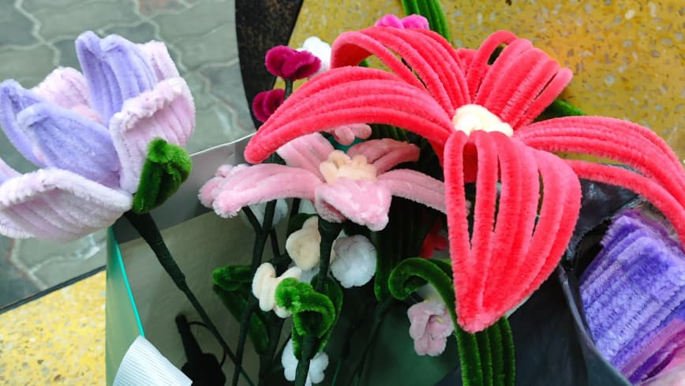
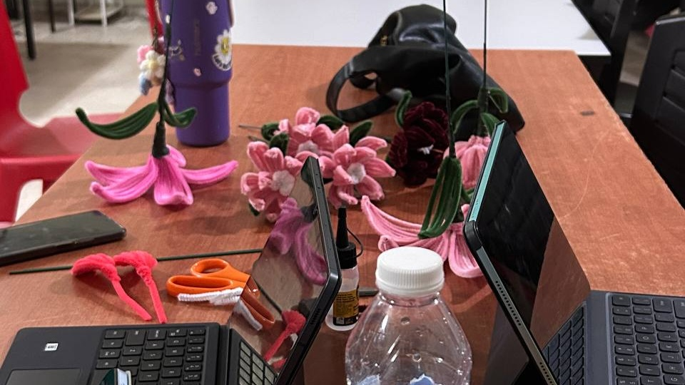
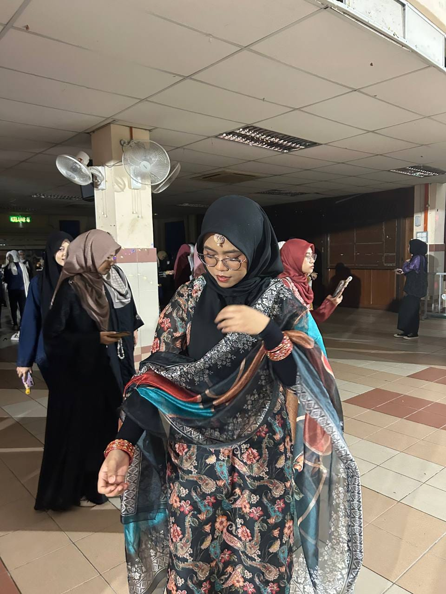

Professional experience
Founder · Teratai Amora
Role summary
- Founded and managed a creative business specialising in handmade faux-flower bouquets made from pipe cleaners.
- Led a seven-member team to produce and fulfil batch and special-occasion orders.
- Managed custom requests, product planning, pricing, order coordination and customer requirements.
- Generated batch orders worth at least RM250 per order while maintaining a profitable model.
Moments



